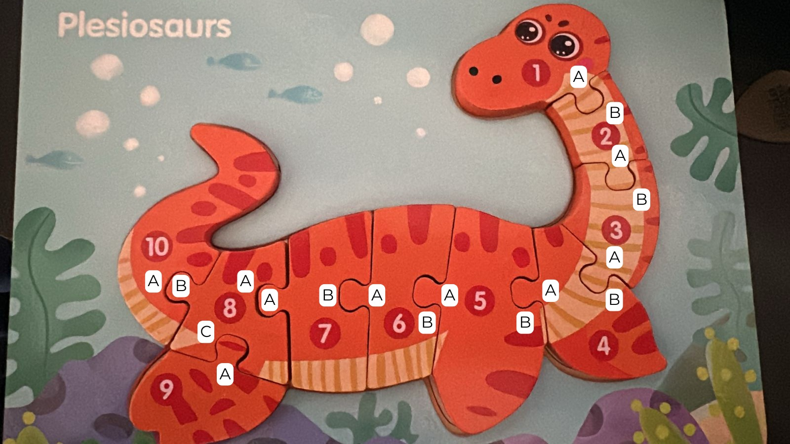
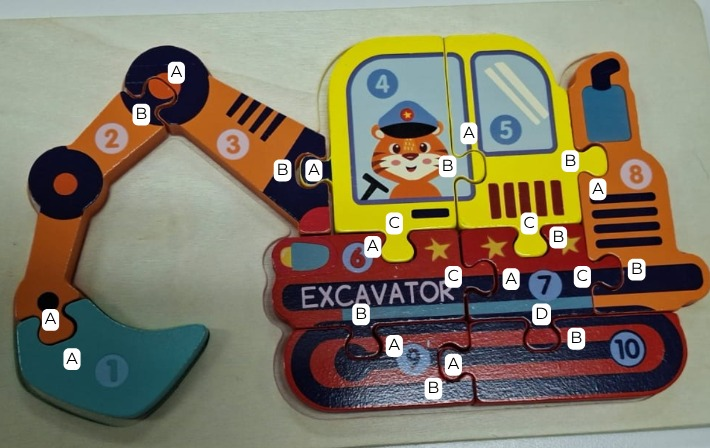

Un sistema para almacenar rompecabezas físicos como grafos y generar instrucciones de ensamblaje paso a paso.
Se nos entregaron rompecabezas físicos de madera con piezas interconectadas. El objetivo: construir un sistema que almacene la estructura del rompecabezas en una base de datos y, a partir de una pieza inicial, genere instrucciones ordenadas de ensamblaje.
Modelar piezas y sus conexiones físicas en una base de datos persistente y consultable.
Dado un punto de partida, producir pasos ordenados para armar el rompecabezas completo.
Si una o más piezas no están disponibles, armar todo lo posible y reportar qué quedó incompleto.
Lo importante a notar: el problema es fundamentalmente sobre conexiones, no sobre formas ni colores. No importa cómo se ve una pieza — importa con quién encaja y cómo.
En un rompecabezas, el dato central no es un atributo de una pieza aislada — es la conexión entre dos conectores de piezas distintas. En SQL esa conexión es una fila en una tabla de unión. En un grafo existe por sí misma como arco de primer nivel.
Pregunta: ¿qué piezas se conectan a la pieza 3? — esta es la operación central del BFS.
SELECT p2.* FROM pieces p1 JOIN connectors c1 ON c1.piece_id = p1.id JOIN connections cx ON cx.conn_a = c1.id JOIN connectors c2 ON c2.id = cx.conn_b JOIN pieces p2 ON p2.id = c2.piece_id WHERE p1.local_id = 'P03';
MATCH (:Piece {local_id:'P03'}) -[:HAS_CONNECTOR]->() -[:CONNECTS_WITH]->() <-[:HAS_CONNECTOR]-(n:Piece) RETURN n;
Traversal de vecindad requiere 4 tablas, 4 JOINs. El BFS completo necesita CTEs recursivos.
La vecindad es nativa. El BFS opera en memoria sobre el mapa de arcos — sin lógica de JOIN.
Neo4j refleja directamente la estructura del problema. Cada ventaja que ofrece corresponde a una necesidad concreta del dominio.
Vecindad entre piezas en dos arcos Cypher. Sin JOINs, sin lógica adicional en la capa de aplicación.
Agregar un nuevo rompecabezas es insertar un subgrafo aislado. No se toca ninguna tabla existente.
Integridad referencial garantizada a nivel de base de datos. Neo4j crea los índices automáticamente.
Una conexión física es simétrica. En Neo4j se almacena en ambas direcciones sin duplicar lógica.
El estado de disponibilidad de cada pieza vive directamente en el nodo :Piece — persistente entre sesiones.
El seed puede ejecutarse múltiples veces sin duplicar datos. Seguro para recargas y actualizaciones.
Para poder cargar un rompecabezas al sistema, primero hay que etiquetarlo físicamente. Cada pieza y cada conector reciben una identificación única que el ensamblador puede leer a mano.


Tres tipos de nodos, tres relaciones. Los IDs globales garantizan unicidad entre puzzles con el formato puzzle_id__local_id.
Dos puzzles pueden tener P01 — ples__P01 y exc__P01 nunca colisionan.
Almacenado en ambas direcciones — traversal sin manejar orientación.
Propiedad booleana que registra si la pieza está disponible. Persiste en la base de datos — no es estado de sesión.
-- seed idempotente con MERGE MERGE (pc:Piece {id:$gid}) SET pc.local_id=$lid, pc.label=$label, pc.available=true -- conexión bidireccional MERGE (ca)-[:CONNECTS_WITH]->(cb) MERGE (cb)-[:CONNECTS_WITH]->(ca)
BFS desde una pieza inicial. Produce instrucciones en orden de distancia — primero las adyacentes, luego las de dos pasos. Una sola consulta Cypher carga el grafo completo en memoria antes de empezar.
Una consulta materializa todos los pares de conectores. Sin roundtrips por iteración.
Por cada conector, su vecino vía CONNECTS_WITH se encola si no fue visitado.
Pieza con available=false → MISSING emitido, rama bloqueada.
Piezas disponibles pero bloqueadas por un faltante se listan al final.
-- vecindad materializada al inicio MATCH (:Puzzle {id:$pid}) -[:CONTAINS]->(:Piece) -[:HAS_CONNECTOR]->(ca:Connector) -[:CONNECTS_WITH]->(cb:Connector) WHERE ca.puzzle_id = $pid AND ca.local_id < cb.local_id RETURN ca.local_id AS a, cb.local_id AS b;
Cargar el grafo de una sola vez es más eficiente que consultar Neo4j en cada paso — evita latencia de red en cada iteración.
El estado de faltante no se pasa como parámetro en tiempo de ejecución — vive en el nodo :Piece como propiedad available. El usuario lo gestiona desde la interfaz y el cambio se escribe directamente a Neo4j.
-- marcar faltante / restaurar MATCH (pc:Piece {id:$gid}) SET pc.available = false SET pc.available = true
MISSING emitido. Se indica qué conector debería unirse y de qué pieza falta.
Rama bloqueada. La pieza faltante no se encola — sin instrucciones imposibles.
Rutas alternativas. Piezas alcanzables por otros caminos se ensamblan con normalidad.
Reporte final. Piezas disponibles pero inalcanzables se listan explícitamente.
-- BFS deriva M desde el grafo cargado
M = {p ∈ P | p.available = false}
visited = {s}; queue = [s]
emitir START
mientras queue no vacío:
u = queue.pop_left()
para cada conector c_u de u:
v = pieza(vecino(c_u))
si v en M:
emitir MISSING; continuar
si v en visited: continuar
visited.add(v); queue.append(v)
emitir PLACED
para p en P - visited - M:
emitir MISSING: inalcanzable
Definidos en data/default_puzzles.json, cargados con python seed.py. Dos puzzles con distinta complejidad de grafo para validar el sistema.
Cadena casi lineal: P01→…→P08, con P08 ramificando a P09 y P10. Un solo hub al final — caso simple para validar el BFS base.
Grafo más denso. P04 (cabina) y P07 (cuerpo central) son hubs con 3 y 4 conectores — caso más complejo con múltiples ramas concurrentes.
Modelos de datos, BFS, lógica de aplicación
Grafos nativos, constraints UNIQUE, traversals
Interfaz web interactiva
GitHub — Proyecto 3 ↗ · Universidad del Valle de Guatemala · Bases de Datos 2